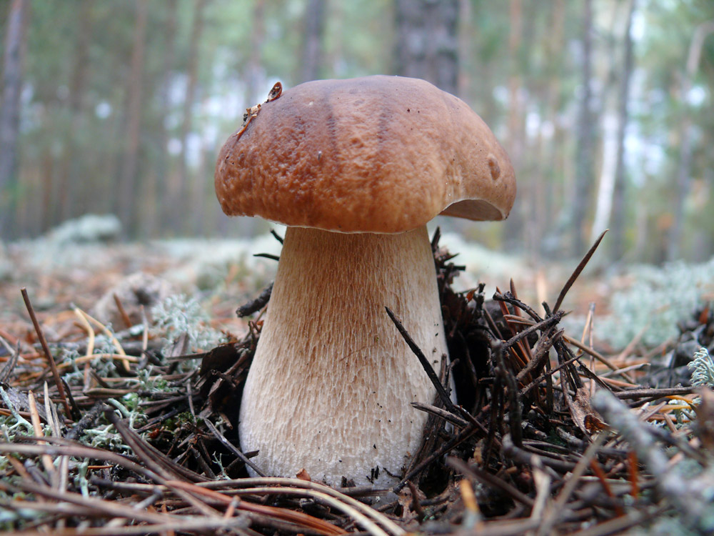
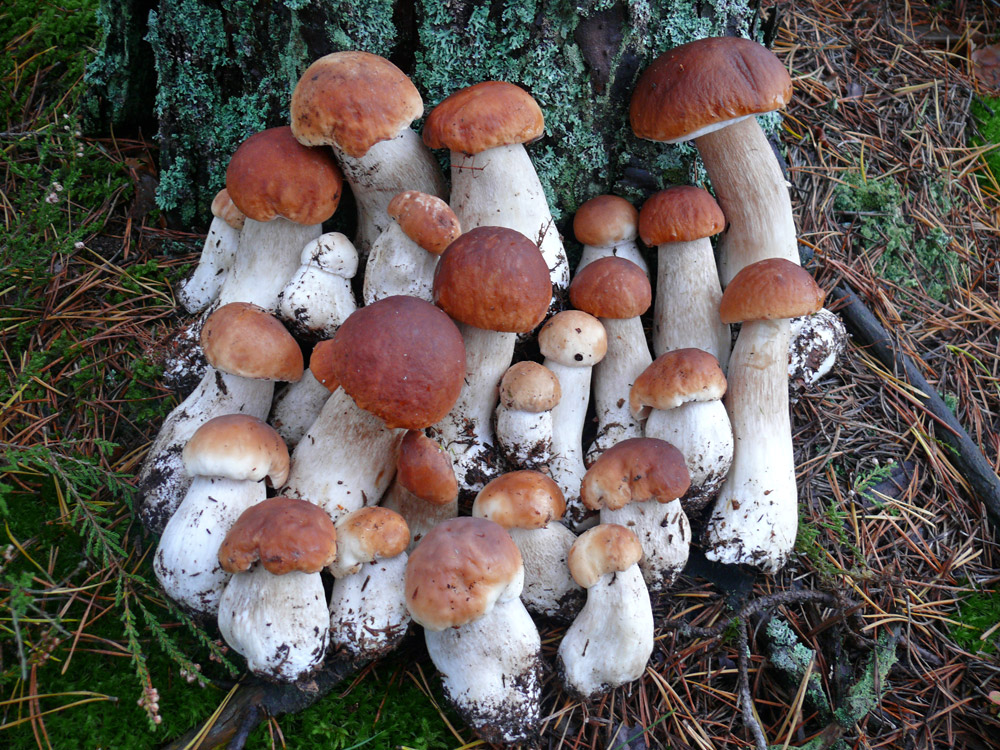

Зростає білий гриб переважно в хвойних і мішаних лісах під соснами, дубами та березами. Період активного збору триває з середини літа до пізньої осені. Грибники особливо цінують його за виразний лісовий аромат та високі поживні властивості.

У кулінарії білі гриби використовують для приготування супів, соусів, а також смажать, маринують і сушать на зиму. Сушені гриби зберігають свій характерний насичений аромат.